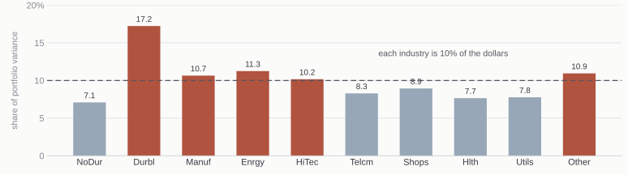
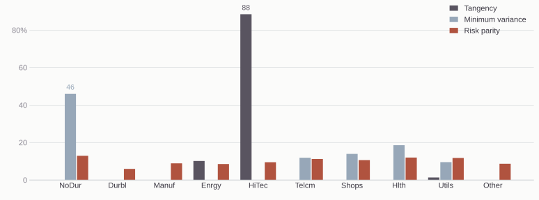
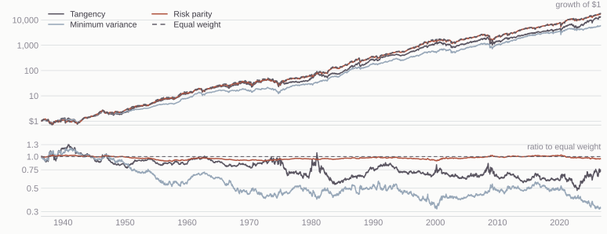

Tangency, minimum variance, and risk parity
Tue Sep 29, 2026
/plugin marketplace add kerryback/skills
/plugin install risk-parity@kerryback
/plugin install two-stage-dcf@kerrybackNow ask Claude what it installed.
Tangency
Maximizes the Sharpe ratio.
Inputs: expected returns, the covariance matrix, and the risk-free rate.
Minimum variance
Minimizes portfolio variance.
Inputs: the covariance matrix.
Risk parity
Equalizes each asset’s share of portfolio variance.
Inputs: the covariance matrix.
All three are long only here: no short sales, and the weights sum to one.
The highest Sharpe ratio available from the ten industries.
Needs an expected return for every industry.
The smallest variance available from the ten industries.
Needs only the covariance matrix.
Tangency is the only one of the three rules that uses expected returns. Long only, none of the three has a closed-form solution, so all three are solved numerically.
Minimum variance uses no expected returns at all. It is the portfolio you would hold if you believed every industry had the same expected return.
It puts the most weight wherever the sample says risk is lowest, so an industry whose risk the sample underestimates is rewarded with a large weight for that reason.
Long only on these ten industries, it holds five of them, with 46% in consumer nondurables.
Makes the portfolio’s variance as small as it can be.
Concentrates on the quietest assets.
Makes every asset’s contribution to that variance the same.
Holds everything on the menu.
Neither uses expected returns. With two assets, equal contributions mean weights proportional to one over volatility, whatever the correlation.
Ten years of weekly returns. Both portfolios keep their weights whatever you choose; risk parity sits inside the frontier.

Ten industries, equally weighted. Consumer durables have an annualized volatility of 39%, consumer nondurables 15%.
Take an asset’s weight in the portfolio, multiply by the covariance of that asset with the return of the portfolio, and divide by the variance of the portfolio. That is the asset’s share of portfolio variance.
Those weighted covariances add up to the portfolio variance, so the shares sum to one.
Risk parity sets every share equal: one tenth each, across ten industries.
NoDur, Durbl, Manuf, Enrgy, HiTec, Telcm, Shops, Hlth, Utils, Other.

Weights from the full 522 weeks, long only.
| Rule | Industries held | Largest position | Largest share of variance |
|---|---|---|---|
| Tangency | 3 | HiTec, 88% | HiTec, 93% |
| Minimum variance | 5 | NoDur, 46% | NoDur, 46% |
| Risk parity | 10 | NoDur, 13% | 10% each |
| Equal weight | 10 | 10% each | Durbl, 17% |
Tangency holds energy and utilities alongside HiTec, at 10% and 1%. Risk parity’s smallest position is 5.9%, in consumer durables.
| Rule | Return | Volatility | Sharpe |
|---|---|---|---|
| Tangency | 22.0% | 20.5% | 0.96 |
| Minimum variance | 9.2% | 14.3% | 0.47 |
| Risk parity | 13.1% | 16.2% | 0.66 |
| Equal weight | 14.0% | 17.0% | 0.68 |
Every figure is computed on the same 522 weeks that produced the expected returns and the covariance matrix. Tangency’s 0.96 is the largest Sharpe ratio any long-only portfolio could have had over those weeks, by construction.
Re-estimate each rule on the first five years and on the second five.
| Rule | Largest position, 2016–21 | Largest position, 2021–26 | Weight change |
|---|---|---|---|
| Tangency | HiTec, 100% | Enrgy, 54% | 54.5% |
| Minimum variance | NoDur, 35% | NoDur, 53% | 43.8% |
| Risk parity | NoDur, 12% | NoDur, 15% | 7.1% |
Weight change is half the sum of the absolute differences between the two sets of weights.
Minimize this over positive weights, then rescale the answer to sum to one:
\[\tfrac{1}{2}\,(\text{portfolio variance}) \;-\; \tfrac{1}{n}\sum_i \log w_i\]
The log term forces every weight strictly positive, the objective is strictly convex, and its solution has equal risk contributions.
The starting point weights each asset by one over its volatility, and g is the analytic gradient. On ten industries it converges in 10 iterations.
Prompt
The file session11-covariance.csv holds the annualized covariance matrix of ten industry portfolios. Find the long-only risk parity portfolio, meaning the weights for which every industry contributes the same share of portfolio variance. Explain the method you chose and why.
Download it: session11-covariance.csv. More than one method finds these weights.
| Industry | Weight | Share of variance | Industry | Weight | Share of variance | |
|---|---|---|---|---|---|---|
| NoDur | 12.9% | 10% | Telcm | 11.2% | 10% | |
| Durbl | 5.9% | 10% | Shops | 10.6% | 10% | |
| Manuf | 8.9% | 10% | Hlth | 12.0% | 10% | |
| Enrgy | 8.5% | 10% | Utils | 11.8% | 10% | |
| HiTec | 9.5% | 10% | Other | 8.7% | 10% |
If you got this, tell Claude to create a risk parity skill and to save its code as a script that the skill uses.
In the ten-year sample each rule was estimated on the same weeks it was judged on, which is why tangency’s Sharpe ratio was the largest available. The backtest takes that away: at every date the weights come from past returns only.
1,084 rebalances over 90 years. Equal weighting, reset to one tenth each on the same schedule, is the benchmark.

| Rule | Return | Vol | Sharpe | Worst drawdown | Turnover |
|---|---|---|---|---|---|
| Tangency | 11.1% | 16.2% | 0.53 | −50.9% | 99% |
| Minimum variance | 10.1% | 12.0% | 0.59 | −43.1% | 17% |
| Risk parity | 11.4% | 14.2% | 0.60 | −49.8% | 2% |
| Equal weight | 11.5% | 14.8% | 0.58 | −52.0% | 0% |
Turnover is the annualized one-way change in target weights, so it leaves out the trading every rule does to offset drift. At 10 basis points a trade, costs take 0.11 points a year off tangency and 0.02 off minimum variance.
Sharpe ratios are against the bill rate; turnover is the one-way change in target weights.
| Rule | Difference | t |
|---|---|---|
| Tangency | −0.056 | −0.99 |
| Minimum variance | +0.002 | +0.04 |
| Risk parity | +0.017 | +2.32 |
Jobson–Korkie differences with Memmel’s correction, on 4,706 weekly excess returns. Risk parity and equal weight have a weekly return correlation of 0.997.
MGMT 638 · Gen AI and Quantitative Investments